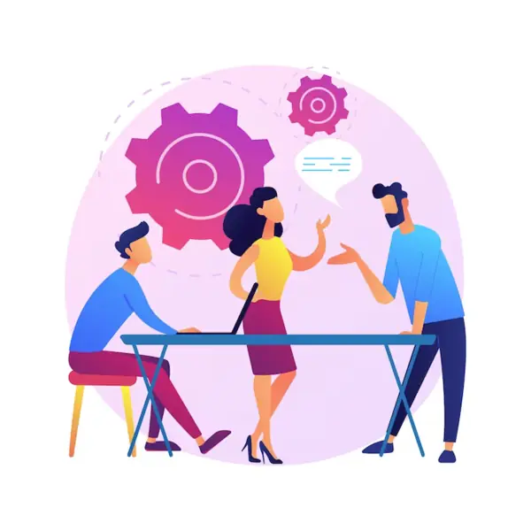

Conseil en management
Capgemini travaille en étroite collaboration avec ses clients pour élaborer des stratégies numériques, cela implique l'identification des opportunités offertes par les technologies émergentes et la définition de plans d'action concrets. En tant que leader dans le domaine, Capgemini excelle dans la fourniture de conseils stratégiques et opérationnels visant à guider les clients à travers les complexités de la transformation numérique et à maximiser la valeur de leurs activités.